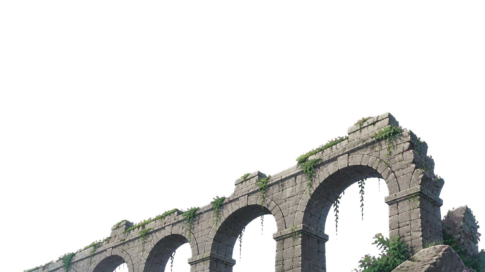
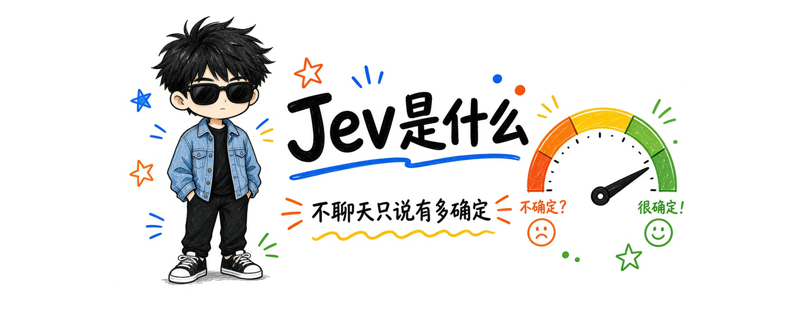
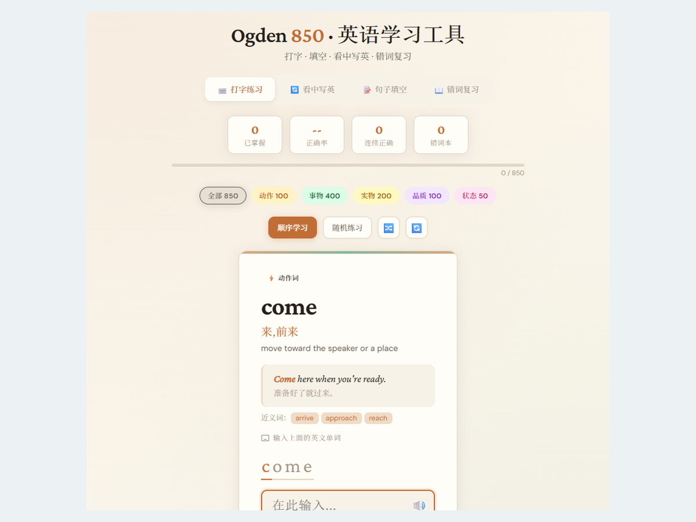
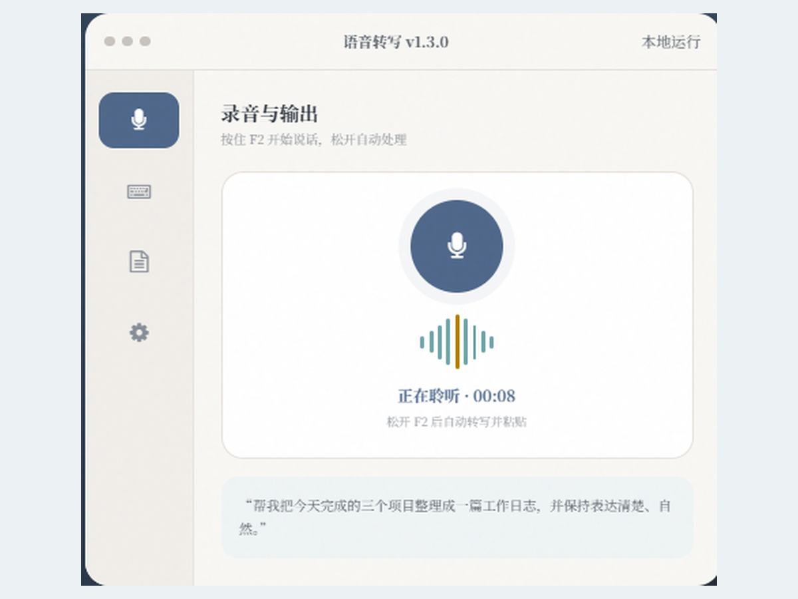

最新随笔 / AI Agent
NEW海外最近很火的 Muse，
到底是什么？普通人能拿它做什么？
最近海外 AI 圈讨论得很热的 Muse，是 Meta 推出的个人 AI Agent。这篇用大白话讲清楚它是什么、能做什么，以及目前在哪里能用。
读这篇随笔 ↗NUO NOTES · OPENING FRAME
诺诺 · 运营实践者 / AI 工具探索者
我是诺诺，做过十年跨行业运营，现在也用 AI 做工具、剪视频、整理知识。这里记下具体的尝试、遇到的问题，以及下次还能用上的经验。



SELECTED WRITING
海外最近很火的 Muse，到底是什么？普通人能拿它做什么？ 产品观察 · 2026.09.2601 / LATEST WRITINGS
观察新的 AI 产品，也记录真实的制作过程。它们能做什么、哪里还需要人来把关，都写在这些文章里。
最新随笔 / AI Agent
NEW最近海外 AI 圈讨论得很热的 Muse，是 Meta 推出的个人 AI Agent。这篇用大白话讲清楚它是什么、能做什么，以及目前在哪里能用。
读这篇随笔 ↗

WORKING PROTOTYPE
Ogden 850 · 打字学英语 真实页面预览 / 可直接打开使用02 / SMALL BUILDS
从练英语到语音输入，这些小工具都来自日常需要。你可以打开试试，看看能不能帮上忙。
WEB TOOL · LEARNING
通过打字练习、看中写英、句子填空和错词复习，帮助英语初学者掌握核心词汇；进度在本地自动保存。
WINDOWS TOOL · PRODUCTIVITY
按住 F2 说话，松开自动识别、整理标点并粘贴到当前输入框，适合消息回复、灵感记录和长文写作。
3D SPACE · EXPLORATION
36米×12米婚庆大棚的空间展示，支持四个预设视角，以及鼠标和触控自由旋转。
2026
THE ROAD CONTINUES
03 / THE JOURNEY
从保险内勤主训、汽车集团运营管理，到独立运营与 AI 工具实践。变化的是场景，不变的是把事情做完整的习惯。
运营、AI 工具、知识管理和内容创作并行，把真实工作过程沉淀为文章与作品。
自学前端、自动化脚本和 AI 工具，将“不会写代码”逐渐变成“可以做出有用的东西”。
在保险、汽车集团等不同环境中积累数据分析、项目闭环、沟通协作与快速学习能力。
FRAME 04 / OPEN END
记录仍在继续。下一篇手记，下一次实践。04 / KEEP IN TOUCH
这个博客会继续记录工具、阅读、生活和真实工作。没有宏大的承诺，只希望每次回来，都多留下一点能复用的东西。
EMAILnuon9951@gmail.com↗“把复杂的事做得更轻、更清楚。”